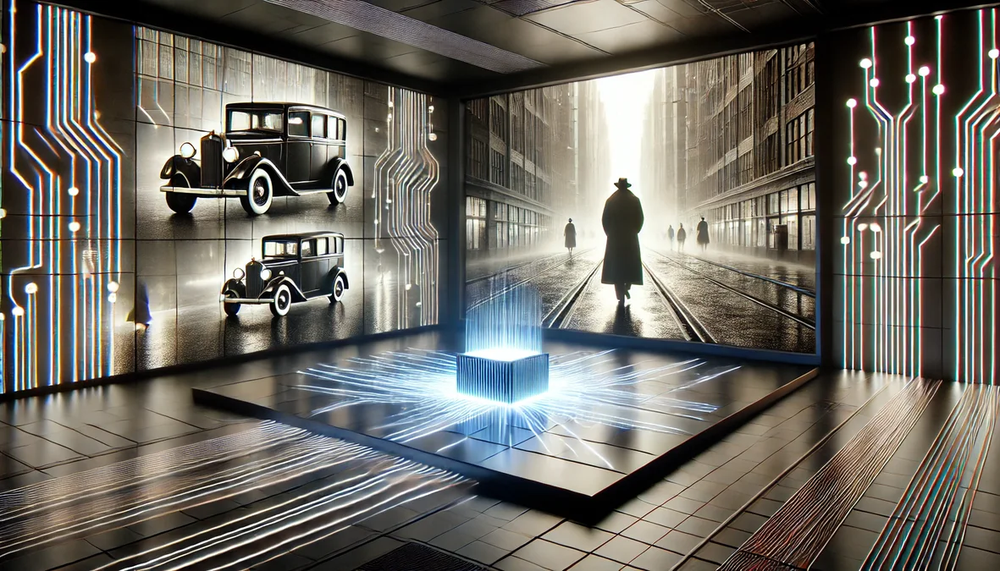

Accelerating Video Generation on ROCm with Unified Sequence Parallelism: A Practical Guide#

Video generation models like HunyuanVideo and Wan 2.1 are rapidly improving, producing high-fidelity text-to-video and image-to-video outputs. These models generate content with such realism that distinguishing synthetic videos from real ones is increasingly difficult. At the core of this progress lies diffusion-based generative modeling, which has evolved from traditional U-Net–style convolutional encoder-decoders to more powerful Diffusion Transformers (DiTs). This architectural shift enables better modeling of complex spatial-temporal dependencies across frames, addressing key limitations in earlier designs.
Unlike U-Nets, which rely on localized convolutions and thus struggle with capturing long-range temporal dependencies, DiTs incorporate Transformer blocks that provide global receptive fields and facilitate richer token mixing. These capabilities are critical for ensuring temporal consistency and coherence across video frames. However, the adoption of DiTs introduces significant computational challenges, particularly their high VRAM requirements and the quadratic complexity of self-attention mechanisms over extremely long sequences. As a result, parallel computation across multiple devices has become essential for both real-time inference and efficient model training.
In the sections that follow, this blog will dive into the nuts and bolts of parallelizing DiTs and provide a step-by-step workflow to clone model repositories, run multi-GPU inference scripts, and visualize the generated videos on AMD GPUs.
Prerequisites#
To follow along with this guide, ensure you have the following setup:
Linux: see the supported Linux distributions.
ROCm 6.3+: see the installation instructions.
MI300X GPUs or newer: video generation models require large amounts of VRAM.
Now you can start preparing the environment.
Getting Started#
To streamline the setup, use the ROCm vLLM Docker image (rocm/vllm-dev:base),
which offers a prebuilt environment optimized for inference on AMD
Instinct MI325X and MI300X GPUs. Run the command below to pull and
launch the container. Replace <path/to/models>
with the path to your model storage directory or a new location for the
models you want to store.
docker run -it --network=host --group-add=video \
--privileged --ipc=host --cap-add=SYS_PTRACE \
--security-opt seccomp=unconfined --device /dev/kfd \
--device /dev/dri -v <path/to/models>:/data rocm/vllm-dev:baseThe following section explains how parallelism enhances DiT efficiency.
Unified Sequence Parallelism#
While large language models (LLMs) generally follow a uniform architecture that lends itself well to standard parallelization techniques like tensor or pipeline parallelism, DiTs present a unique set of challenges due to their heterogeneous multimodal structure. Specifically, DiT blocks often integrate text and image/video modalities, and the attention computation begins after QKV (query-key-value) projections are separately applied to each modality. These projections are then concatenated along the sequence dimension, creating a hybrid sequence with distinct memory and computation patterns.
This design makes it difficult to naively apply tensor parallelism strategies that work well in LLMs. For instance, distributing the attention mechanism across devices becomes complicated due to the need to synchronize and align cross-modal latent tensors, which have different origins and potentially different dimensions. Furthermore, variations in connectivity patterns between DiT blocks in different video generation models adds another layer of complexity in maintaining efficient and consistent communication between devices.
To address the computational demands of scaling DiTs, HunyuanVideo and Wan 2.1 employ Unified Sequence Parallelism (USP), a general-purpose parallelism framework that wraps two complementary communication strategies, DeepSpeed-Ulysses (all-to-all) and Ring-Attention (peer-to-peer), into a unified 2D process mesh. USP exposes two tunable degrees of freedom: the Ulysses degree and Ring degree, allowing users to control how many GPUs participate in each type of collective operation. xDiT, a parallel inference engine built specifically for DiTs, integrates USP to enable scalable and efficient deployment of video diffusion models.
Under USP, both Ulysses and Ring-Attention begin by splitting the combined text and image/video token sequence across GPUs, so that each GPU is responsible for a contiguous chunk of the input. In the Ulysses approach, the system performs an all-to-all communication step to rearrange the token-sharded data into a head-sharded layout, which is better suited for computing self-attention. By contrast, Ring-Attention keeps the token splits as-is and instead streams the key and value tensors between GPUs in a peer-to-peer fashion. To further improve efficiency, xDiT enhances USP by applying fine-grained kernel-level sharding to both the text conditioning inputs and the image/video latents. This avoids redundant data replication during QKV projection and attention, making it especially effective for multimodal DiT blocks.
According to the MI300X RCCL Benchmarks, a hybrid configuration of Ulysses-8 / Ring-1 should deliver optimal performance. With a Ulysses degree of 8, all GPUs are utilized, saturating collective bandwidth for all-to-all operations. Meanwhile, a Ring degree of 1 avoids unnecessary peer-to-peer hops, which are constrained to roughly 45–48 GB/s per connection, thereby reducing communication overhead. In practice, this “Ulysses-8 / Ring-1” setup achieves an ideal balance between bandwidth and latency, maximizing throughput across AMD’s Infinity Fabric while minimizing per-token inference latency, enabling fast, high-fidelity video generation at scale.
To set up USP, clone the long-context-attention repository and install dependencies:
cd /data
git clone https://github.com/feifeibear/long-context-attention
pip install ./long-context-attention xfuserYou’re now ready to start generating videos!
Video Generation in Practice#
Hunyuan Video#
HunyuanVideo is a 13-billion parameter text-to-video model developed by Tencent. It generates videos with high physical realism and scene consistency, effectively bringing conceptual and creative ideas to life. HunyuanVideo works by first encoding text prompts using a multimodal large language model to extract rich semantic representations, which serve as conditioning inputs. These condition vectors, combined with Gaussian noise, are fed into the generative diffusion transformer (DiT) that iteratively refines the latent representation. The final latent output is then passed through a 3D variational autoencoder (VAE) decoder, which reconstructs it into coherent image or video sequences, capturing both spatial detail and temporal consistency.
Clone the HunyuanVideo repository and download models:
Note: Your download might take over 30 minutes, depending on network speed and storage I/O.
git clone https://github.com/Tencent-Hunyuan/HunyuanVideo
cd HunyuanVideo
pip install loguru gradio
huggingface-cli download tencent/HunyuanVideo --local-dir ckpts
huggingface-cli download xtuner/llava-llama-3-8b-v1_1-transformers --local-dir ckpts/llava-llama-3-8b-v1_1-transformers
huggingface-cli download openai/clip-vit-large-patch14 --local-dir ckpts/text_encoder_2
python hyvideo/utils/preprocess_text_encoder_tokenizer_utils.py --input_dir ckpts/llava-llama-3-8b-v1_1-transformers --output_dir ckpts/text_encoderGenerate a video with the command below, using ulysses-degree 8 and
ring-degree 1 for
optimal speed. After the video is generated, you’ll find the output file
in the ./results directory
inside the Docker container.
torchrun --nproc_per_node=8 sample_video.py \
--video-size 720 1280 \
--video-length 129 \
--infer-steps 50 \
--prompt "A dancer performing in a vibrant city square." \
--flow-reverse \
--seed 42 \
--ulysses-degree 8 \
--ring-degree 1 \
--save-path ./resultsYou can now play the generated video. It demonstrates dynamic and coherent visual output.
The next section focuses on Wan 2.1’s unique capabilities.
Wan 2.1#
Wan 2.1, developed by Alibaba, is a 14-billion parameter text-to-video DiT model that leverages the same Flow Matching framework used in HunyuanVideo. Like HunyuanVideo, Wan 2.1 excels at generating coherent videos featuring complex actions, making it well-suited for creative applications. While it operates similarly to HunyuanVideo, Wan 2.1 uniquely employs a T5 Encoder to process prompts. This encoder supports multilingual inputs and enriches the DiT with detailed semantic information through cross-attention within each Transformer block. Time embeddings are handled by a shared MLP, composed of Linear and SiLU layers, which predicts six modulation parameters; each block also learns distinct biases to enhance flexibility. The model’s standout innovation is Wan-VAE, a novel 3D causal Variational Autoencoder that significantly improves spatio-temporal compression. Unlike conventional VAEs, Wan-VAE preserves temporal causality and enables encoding and decoding of unlimited-length 1080p videos without losing historical context.
Clone the Wan 2.1 repository and install its dependencies:
cd /data
git clone https://github.com/Wan-Video/Wan2.1.git
cd Wan2.1
pip install -r requirements.txtDownload the Wan2.1 model weights:
huggingface-cli download Wan-AI/Wan2.1-T2V-14B --local-dir Wan2.1-T2V-14BGenerate a video using the same prompt:
torchrun --nproc_per_node=8 generate.py \
--task t2v-14B \
--size 1280*720 \
--ckpt_dir ./Wan2.1-T2V-14B \
--dit_fsdp \
--t5_fsdp \
--ulysses_size 8 \
--prompt "A dancer performing in a vibrant city square."The video showcases high-quality, temporally consistent output.
Summary#
The transition from the U-Net architectures to DiTs has improved video generation, supporting high-fidelity text-to-video synthesis with enhanced temporal coherence. However, this shift introduces significant computational challenges due to DiTs’ VRAM demands and self-attention complexity from extremely long sequences. By leveraging USP within the xDiT inference engine, models like HunyuanVideo and Wan 2.1 achieve scalable, efficient performance on AMD MI300+ GPUs. The “Ulysses-8 / Ring-1” configuration optimizes bandwidth and minimizes latency, fully utilizing AMD’s Infinity Fabric. This guide outlines the steps for configuring the ROCm environment and running video generation with these models.
Disclaimers#
Third-party content is licensed to you directly by the third party that owns the content and is not licensed to you by AMD. ALL LINKED THIRD-PARTY CONTENT IS PROVIDED “AS IS” WITHOUT A WARRANTY OF ANY KIND. USE OF SUCH THIRD-PARTY CONTENT IS DONE AT YOUR SOLE DISCRETION AND UNDER NO CIRCUMSTANCES WILL AMD BE LIABLE TO YOU FOR ANY THIRD-PARTY CONTENT. YOU ASSUME ALL RISK AND ARE SOLELY RESPONSIBLE FOR ANY DAMAGES THAT MAY ARISE FROM YOUR USE OF THIRD-PARTY CONTENT.